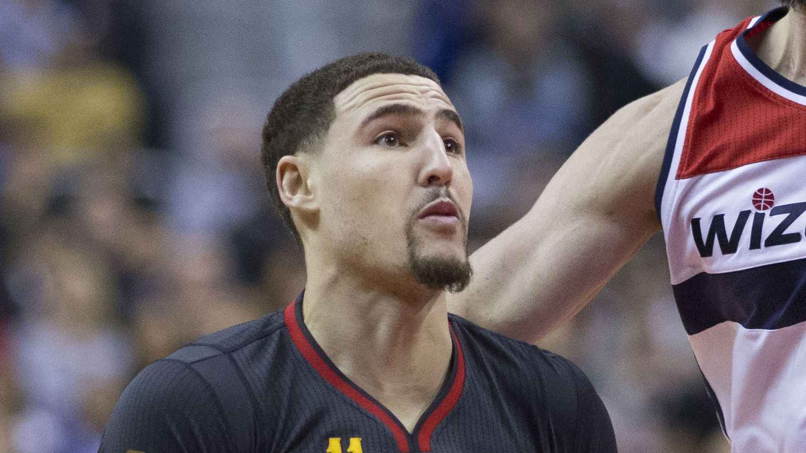

クレイ・トンプソン、 マーベリックス退団へ —— ヒート入り濃厚、ジアニス擁する優勝候補に加入
ダラス・マーベリックスがクレイ・トンプソン(36)との契約を買い取ることで合意し、ウェイバー通過後はマイアミ・ヒートと契約する見通しだと、ESPNのシャムズ・チャラニア氏が日本時間8月21日に報じた。

契約解除の経緯 —— 本人からの申し出
トンプソンはマーベリックスとの契約最終年で1750万ドルを受け取る予定だったが、ESPNによれば、契約買い取りは本人がチームに「優勝を争えるチームでプレーしたい」と伝えたことがきっかけだったという。マーベリックスは前シーズンを26勝56敗で終えており、買い取りは金曜午後にチーム側から発表された。マーベリックス president of basketball operations のマサイ・ウジリ氏は声明で「クレイは彼の世代を代表する偉大な選手であり、勝負師だ。マーベリックスにもたらしてくれたすべてに感謝している」と述べたとESPNは伝えている。
ジアニス獲得のヒート、外角の穴を埋める補強に
ESPNによると、ヒートはヤニス・アデトクンボ(ジアニス)を獲得する大型トレードを成立させた後、トンプソン獲得を最優先ターゲットに据えていたという。ジアニスとバム・アデバヨを中心に優勝候補としてのチーム作りを進めるヒートにとって、外角シュート力の補強という課題に応える一手になるとESPNは伝えている。
マーベリックスでの2年間、通算3P成功数は歴代4位に
トンプソンはマーベリックスでの2シーズン、平均12.9得点・3P成功率38.7%を記録。前シーズンにはダミアン・リラードを抜き、通算3P成功数で歴代4位(2899本)に浮上した。マーベリックス加入前はゴールデンステート・ウォリアーズで13シーズンをプレーし、2024年のサイン&トレードでダラスに移籍。ウォリアーズ時代はオールスター5回選出・優勝4回を経験した一方、アキレス腱や膝の負傷でシーズンを丸々欠場したこともあった。あと75本の3Pを沈めれば、レイ・アレン(2973本)を抜いて歴代3位に浮上する計算だが、その先にはジェームズ・ハーデン(3390本)、そして元チームメイトのステフィン・カリー(4248本)が控えている。
出典: ESPN「Mavs buy out Klay Thompson's deal; Heat move on deck, sources say」
https://www.espn.com/nba/story/_/id/49683637/mavs-buy-klay-thompson-deal-heat-move-deck-sources-say